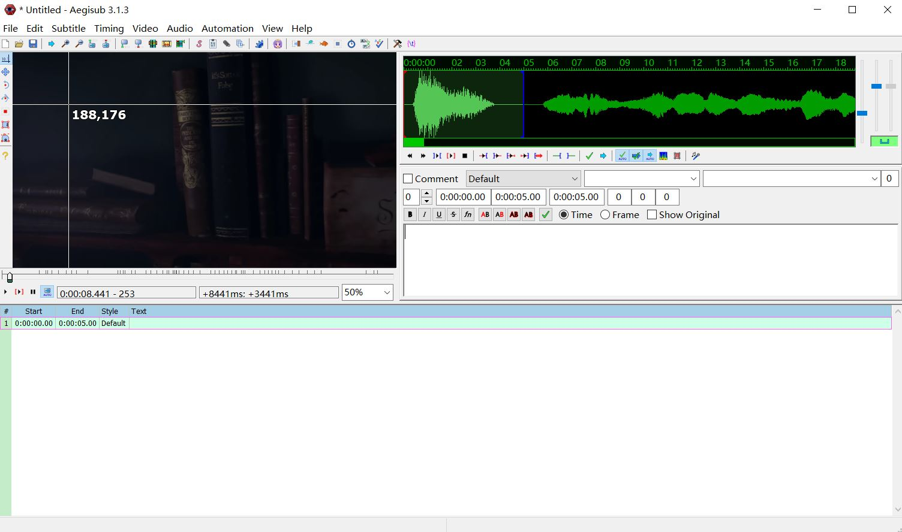

Download the software according to the guide, and then you'll see an interface as shown below:
If you need to translate the subtitles from a video, you can start by importing both the corresponding video and audio. To load a video file, go to the Video menu and press Open video file. What video files you can open depends on your video provider. To use a dummy (mockup, blank) video, press Use dummy video. You can now play the video in Aegisub by pressing the Play button right below the video.
To translate a video, you need to check the accurate time when a sentence starts and ends. So it would be better to have the audio from the video imported. In Aegisub, you go to the Audio menu and press Open audio from video, then the audio will be automatically loaded. Or you can also press Open audio file if the audio needed is not available in the video and another source of audio is at hand.
When your audio file has loaded, Aegisub will transform into something like the screenshot below:

You can click and drag just below the audio timeline to change the height of the audio waveform/spectrum display.
When you click on a line in the subtitles grid, Aegisub will highlight it in the audio display and, if you have auto-scrolling enabled, scroll the audio display so it's centered on the line (during normal timing, it's usually a good idea to disable auto-scrolling). You'll notice various vertical lines in the audio display; the pink ones indicate keyframes in the video if you have it loaded (see the Working with video section), the white broken line indicates the currently visible video frame, and the thick red and orange ones are the line start and end markers (respectively) for the current line. To (re-)define the start and end times of the line, you can either left-click to set the start time and right-click to set the end time, or just drag-and-drop the line boundaries. Press the play button (keyboard shortcut s by default) to listen to the selection, or the various other playing buttons to listen to parts of the selection or the audio surrounding it. When you are satisfied with the timing, press commit to save the line and move onto the next one. Then repeat once for every line; it's as simple as that.
After the above two steps are finished, you'll see an interface as follows:
 Now what you have to do is to handle subtitles of this video.You can either input your translation directly in the Edit Box, or import a subtitle file from your computure, if there is, by dragging it into the interface of Aegisub or by pressing Open Subtitles under Subtitle menu. Then you'll see what happened in the Subtitles Grid.
So, the subtitles will be shown in the bar, whether you input them or import them. You can press Enter key or "commit" button when you finish it and are to move to the next line .
While dealing with each line of the subtitles, you need to make sure that each line should be consistent with the audio, which means you have to adjust the audio spectrum. Listen to the audio carefully and adjust the time of each line. (refer to step 3)
A style in the ASS format is a set of typographic formatting rules that is applied to dialogue lines. The style parameters can be overridden with override tags; the styles exist so that you won't have to type out all the overrides for each line.
Aegisub's styles manager tool (accessed from the Subtitles menu) provides various means of organizing, saving and editing styles. It looks like this:
As you can see, the window is divided into two halves. The right half displays all styles that you currently have accessible in your currently loaded script; the left represents a style storage. Style storages are used by Aegisub to let you save styles and quickly import them into scripts.
Pressing the "Edit" button or double clicking a style name will bring up the style editor, which lets you tweak all the parameters available.

The Preview section shows what the text will look like using the current style parameters. The text field lets you input some sample text to preview, and the colored box controls the color of the background.
Once your work is fisished, don't forget saving it by pressing Save or Save as under File menu.. In addition, it'd be better for you to press Save button every now and then in case of sudden malfunction.